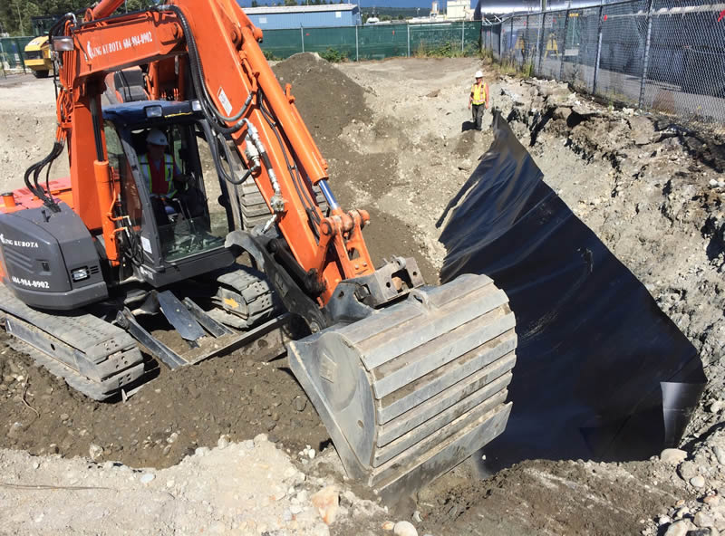
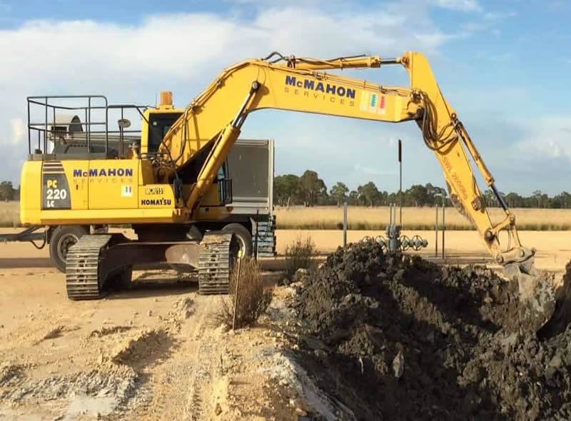
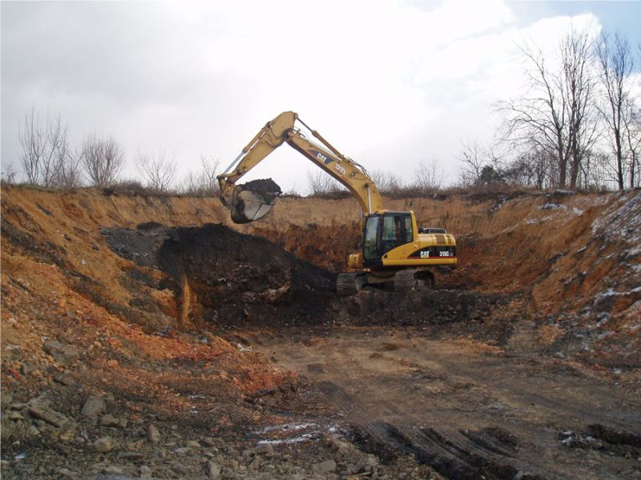
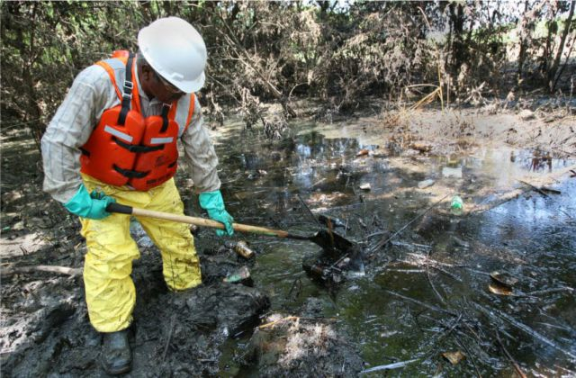

Service 06
Environmental Services
Responsible environmental planning, monitoring, and sustainability support.




Environmental Services — Remediation & Sustainability
We provide a complete environmental remediation solution using in-situ bioremediation technologies combined with deep technical expertise. Our services include site assessment, monitored natural attenuation, bioremediation planning and implementation, environmental monitoring, and sustainability advisory support. We have delivered successful remediation projects across complex sites, meeting and often exceeding regulatory and industry standards.
- Site Assessment & Remediation Planning: Diagnostic investigations and tailored remediation strategies.
- In-situ Bioremediation: Microbial and nutrient treatments to accelerate contaminant degradation.
- Monitoring & Compliance: Long-term monitoring and reporting to ensure performance and regulatory compliance.
- Sustainability Advisory: Integration of sustainable practices into remediation and land reuse.
Practical sustainability support
Environmental impact assessments, monitoring programs, and sustainability advisory services.
Discuss your needs